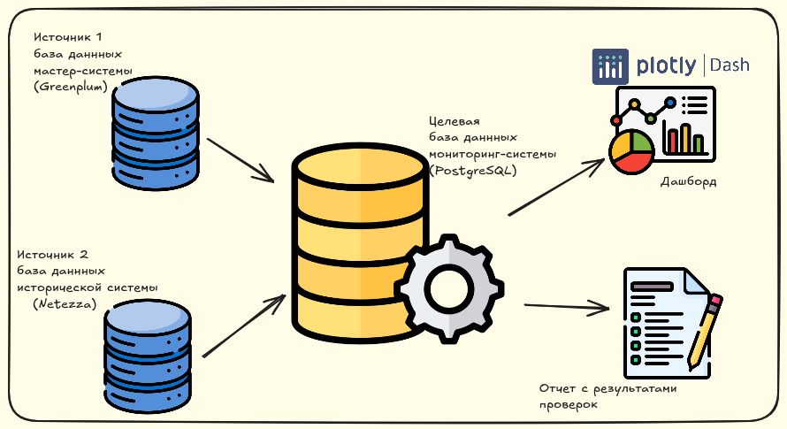

Проекты
Работа с базами данных
-

Универсальный коннектор к базам данных
Введение: Библиотека для подключения к базам данных через JDBC.
Технологии: Python, JDBC, Pandas.
Роль: Разработка библиотеки.
Результаты:
- Реализация паттерна Singleton, который обеспечивает повторное использование подключения к базе данных.
- Обеспечена универсальность доступа к различным базам данных, что позволяет выполнять SQL-запросы и получать данные в формате DataFrame pandas, для их дальнейшей обработки.
Итог: Упрощает и ускоряет разработку приложений, связанных с подключением к БД и обработкой данных, что положительно влияет на производственный процесс и повышает эффективность разработки.
Демонстрация: Ссылка на проект
-

Мониторинг качества данных
Введение: Проект мониторинга качества данных состояния лицевых счетов направлен на обеспечение целостности и актуальности данных между мастер-системой и исторической системой.
Технологии: Python, PostgreSQL, psycopg2, nzpy, Pandas, Dash.
Роль: Разработка системы мониторинга для проверки и актуализации данных.
Результаты:
- Реализован конвейер по выгрузке данных из систем источников и загрузке в систему мониторинга.
- Проведение проверок данных между системами и формирование отчетов с результатами, включая визуализацию в виде дашборда.
Итог: Мониторинг качества данных способствует повышению надежности и актуальности информации, что улучшает принятие решений и оптимизирует бизнес-процессы на предприятии.
Демонстрация: Ссылка на проект
-

ETL-процесс для витрины данных на PostgreSQL
Введение: Проект направлен на создание витрины данных для оптимизации извлечения данных из исторической таблицы act_hi_detail, содержащей более 750 миллионов записей.
Технологии: PostgreSQL, Python, Pandas, psycopg2.
Роль: Разработка ETL-процесса для эффективной обработки данных.
Результаты:
-
Реализован ETL-процесс:
Оптимизировано извлечение данных из БД PostgreSQL, обработка этих данных с использованием Pandas и загрузка в другую БД PostgreSQL, которая будет служить в качестве витрины данных.
Итог: Снижена нагрузка на продуктовую базу данных Camunda, создана витрина данных, используемая для аудита и мониторинга бизнес-процессов предприятия.
Демонстрация: Ссылка на проект
-
Реализован ETL-процесс:
-

Специфика работы с Netezza
Введение: Оптимизация хранения и обработки данных.
Технологии: Netezza, SQL.
Роль: Анализ и оптимизация запросов.
Результаты: Повышение производительности.
Демонстрация: Ссылка на проект
-

Специфика работы с Greenplum
Введение: Оптимизация хранения и обработки данных.
Технологии: Greenplum, SQL.
Роль: Анализ архитектуры.
Результаты: Увеличение скорости обработки.
Демонстрация: Ссылка на проект
Работа с REST-API
-

REST API Tool
Введение: Библиотека для работы с REST API.
Технологии: Python, REST API.
Роль: Разработка библиотеки.
Результаты: Упрощение интеграции.
Демонстрация: Ссылка на проект
-

WebHDFS Клиент
Введение: Клиент для работы с HDFS.
Технологии: Python, HDFS.
Роль: Разработка клиента.
Результаты: Упрощение работы с HDFS.
Демонстрация: Ссылка на проект
Работа с брокером сообщений
-

Переотправки
Введение: Flask-приложение для отправки сообщений в IBM MQ.
Технологии: Flask, IBM MQ.
Роль: Разработка приложения.
Результаты: Упрощение процесса.
Демонстрация: Ссылка на проект
Автоматизация
-
RPA Скрипт
Введение: Скрипт для автоматизации извлечения данных.
Технологии: RPA, Python.
Роль: Разработка скрипта.
Результаты: Упрощение управления.
Демонстрация: Ссылка на проект
Учебные проекты
-
Разработка ETL-пайплайна c PySpark и ClickHouse
Введение: ETL-пайплайн для обработки данных.
Технологии: PySpark, ClickHouse.
Роль: Разработка пайплайна.
Результаты: Эффективная обработка.
Демонстрация: Ссылка на проект
-

Разработка ETL-пайплайна c PySpark и PostgreSQL
Введение: Обработка данных о полетах.
Технологии: PySpark, PostgreSQL.
Роль: Разработка пайплайна.
Результаты: Успешная загрузка.
Демонстрация: Ссылка на проект
-

Разработка ETL-пайплайна c PySpark, PostgreSQL, ClickHouse и Grafana
Введение: Конвейер обработки данных о продажах.
Технологии: PySpark, ClickHouse, Grafana.
Роль: Разработка пайплайна.
Результаты: Эффективная обработка.
Демонстрация: Ссылка на проект
Pet-проекты
-

КиноСмотрители
Введение: Веб-приложение для обмена фильмами.
Технологии: Django, MySQL.
Роль: Разработка приложения.
Результаты: Успешный запуск.
Демонстрация: Ссылка на проект Развернутое приложение
-
Аналитика вакансий HH
Введение: Анализ вакансий на платформе HH.
Технологии: Python,MySQL, Flask, requests, Grafana.
Роль: Сбор и анализ данных.
Результаты: Успешный анализ.
Демонстрация: Ссылка на проект Развернутое приложение